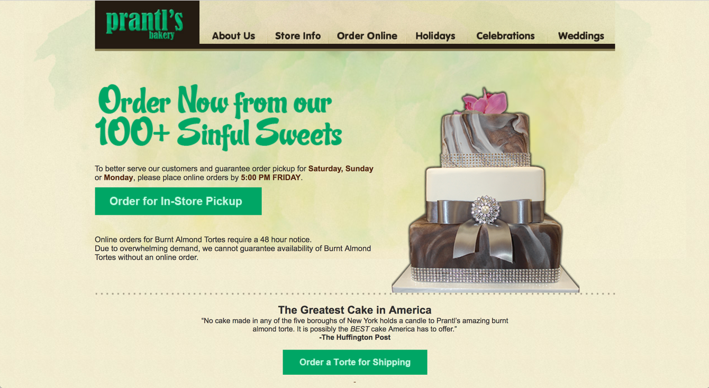
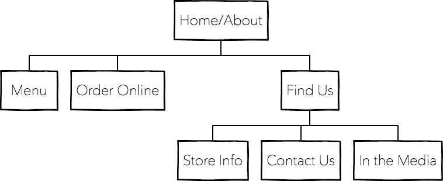
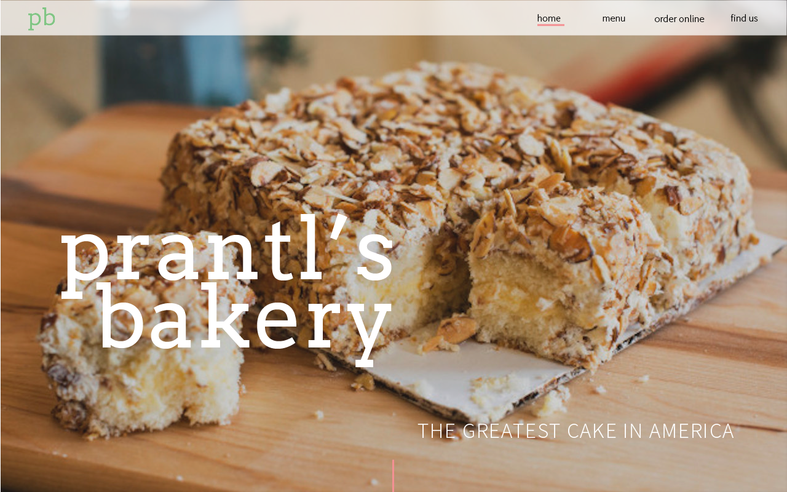
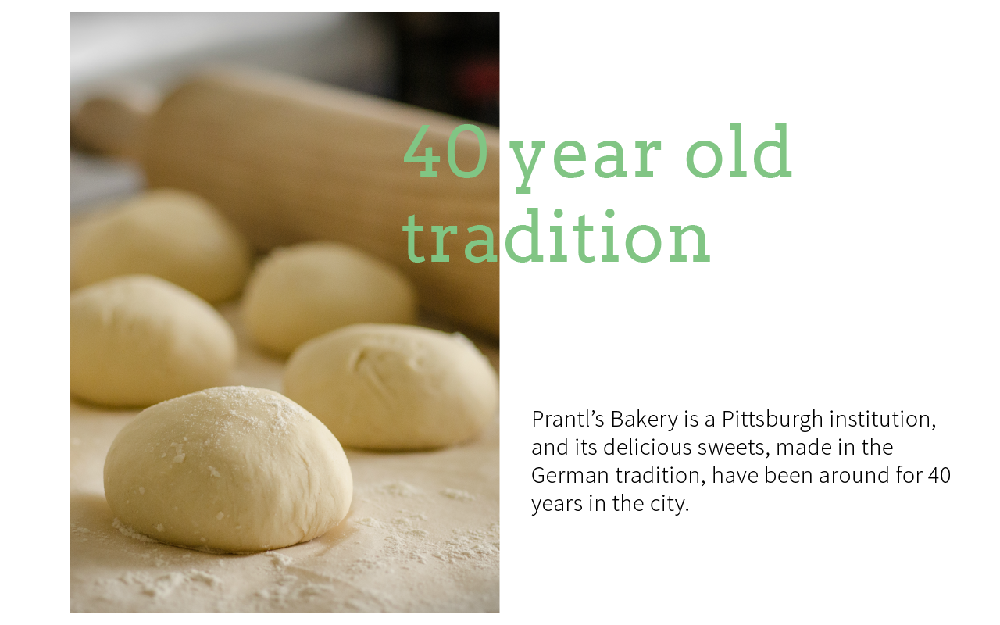
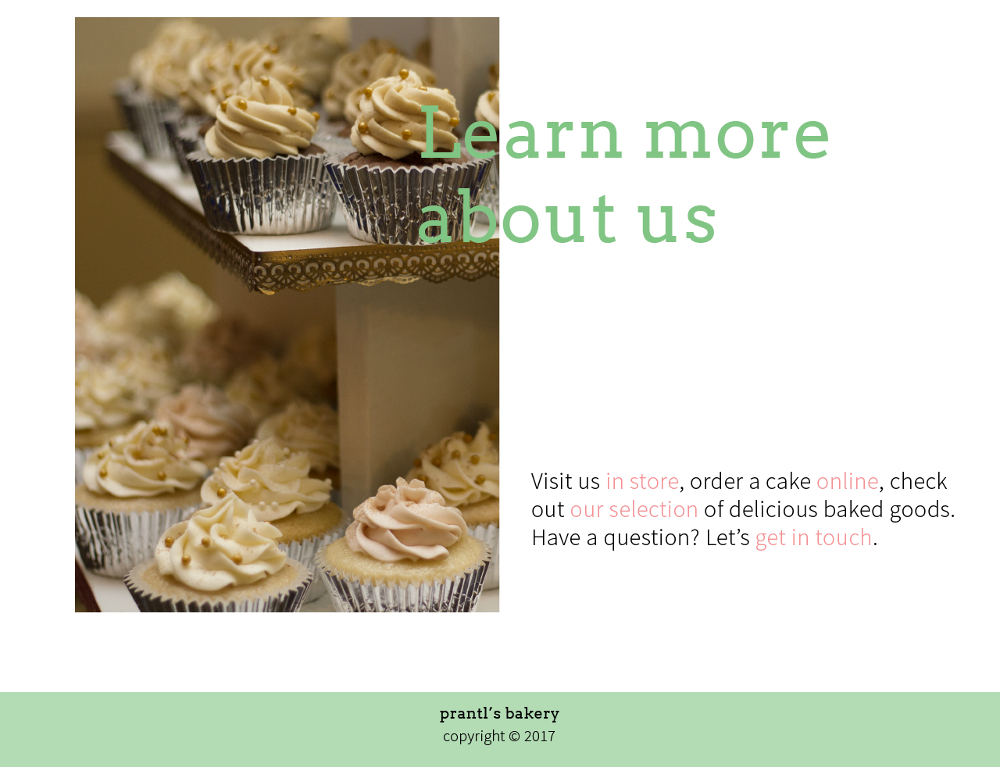
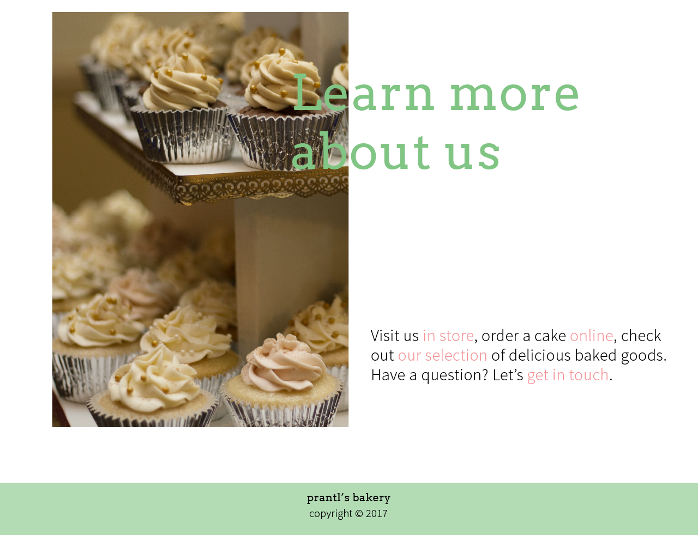
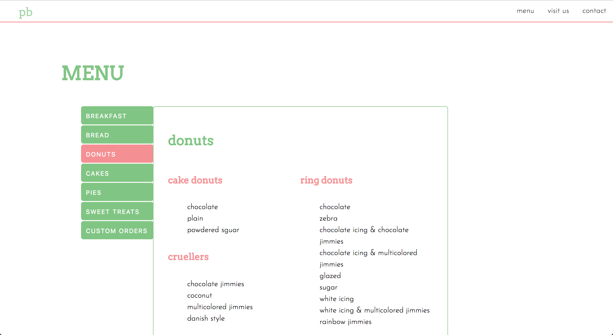
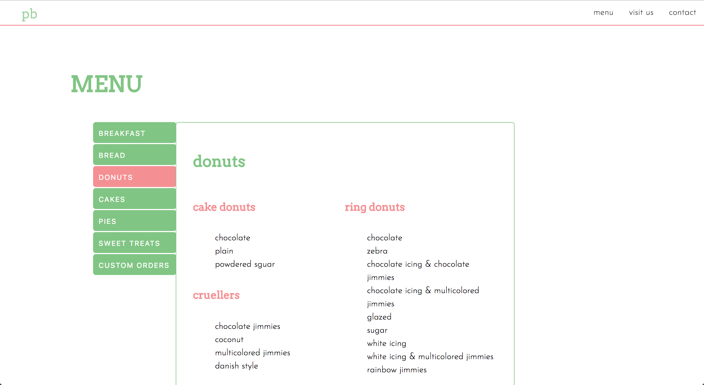

introduction—
For an Information Systems class, we were asked to redesign and reimagine the website of Prantl's Bakery. Prantl's Bakery, located in Pittsburgh, PA, is known for it delicious burnt almond torte.
original design—

The website's current design is very confusing. The placement of information and visual flow across the website are not consistent and is quite difficult to navigate.
user stories—
Before beginning, I create a list of 10 user stories to better understand the purpose of the site and user needs.
design process—
Before I began to design my website, I spent sometime navigating the website to condense and reorganize the information into a few pages. Instead of having so many pages, I decided to condense the website down into 4: the home page (doubles as an about page), the menu, store information, and contact information. I decide to streamline the catering information to go under the menu and also wanted to organize the menu by tabs. I felt that this simplified the system and made it more accessible.
On the home page, I decided to focus on the things that I felt represented Prantl’s the best: the almond torte and general bakery background information. I thought that supplementing the information with extra images would help reinforce the message. Next, I wanted to create a “visit us” page that would incorporate the store information. This page would include information about both stores in a 2 column format. Lastly, the contact page would be a simple form that a visitor could fill out for more information. In the footer, I added social media links to help a user get better connected with the bakery. As for the navbar, I decided to have a fixed navbar that would be at the top of the page at all times. I think that this makes it easier for the user to access. Next, I tried to pick light complementary colors for the site because I felt that this suited the brand better.
early stages—

I created a site map to help with visualizing and understanding information flow on the site. I also sketched different ideas I had for the website.
mid & high fidelity wireframes—


 

user testing—
I conducted usability tests with 5 individuals. Before the testing sessions, I wrote out a script of the tasks and questions that I would ask them. During testing, I asked them for their initial impressions of the site and for them to complete a series of tasks encompassing all the features of the site. Then after completing the tasks, I would ask them what they liked and disliked about the site and what they would change.
final product—
Here are some screenshots of the final product. To view and see the website, visit my Github.
 
